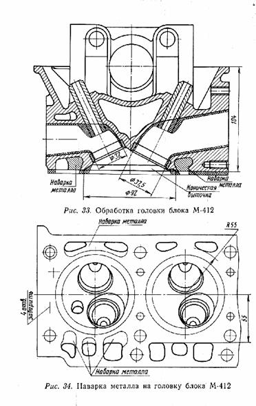
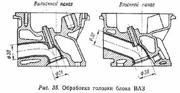
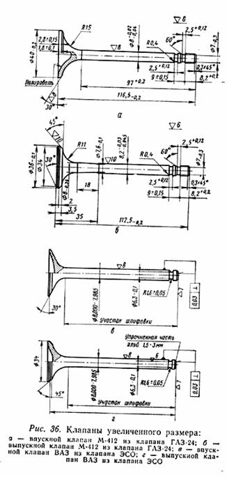
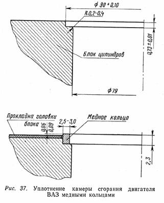

Головка блока цилиндров двигателя вместе с цилиндром образует надпоршневую полость, в которой осуществляются все тепловые процессы рабочего цикла. Сложность конструкции головки цилиндров обусловлена множеством функций, которые она выполняет, а также рядом требований, предъявляемых к ней:
Головка цилиндров двигателя
Спортсменам, выполнившим спортивный разряд и дошедшим до финиша нескольких соревнований за счет надежности стандартного двигателя, пора задуматься о повышении динамики автомобиля и повышении его максимальной скорости.
Первое мероприятие в этом направлении всем хорошо известно — это повышение степени сжатия путем фрезерования плоскости разъема головки цилиндров за счет уменьшения объема камеры сгорания.
В табл. 28 приведены расчетные значения степени сжатия двигателя
| Глубина фрезерования, мм | 0,5 | 0,8 | 1,0 | 1,2 | 1,4 | 1,6 | 1,8 | 2,0 |
| Степень сжатия | 9,25 | 9,64 | 9,83 | 10,09 | 10,48 | 10,81 | 11,62 | 12,85 |
| Глубина фрезерования, мм | 0,2 | 0,5 | 0,8 | 1,0 | 1,2 | 1,5 | 1,8 | 2,0 | 2,5 | 2,9 |
| Степень сжатия | 9,0 | 9,2 | 9,4 | 9,5 | 9,8 | 9,9 | 10,2 | 10,4 | 11,0 | 11,5 |
Завод ВАЗ выпустил головки блока с тремя маркировками, отлитыми с левой стороны над плоскостью разъема. Головки с маркировкой 2101–1003015 и 2
У двигателя
Обе таблицы составлены с учетом заводской комплектации в настоящее время, т.е. имеется в виду установка унифицированной головки на все двигатели. Поршни в двигателях
Лучше всего фрезеровать полностью разобранную головку цилиндров,
Фрезеровать желательно на
После фрезерования снимаются заусенцы и головка тщательно очищается от стружки. Желающим произвести подготовку головки блока цилиндров по программе максимум, однако, рано думать о сборке головки и постановке ее на двигатель. Надо на расточном станке произвести тонкую и сложную работу по расточке седел для клапанов увеличенного диаметра (рис. 33, 34, 35).

Улучшение условий наполнения цилиндров горючей смесью и очистки их от продуктов сгорания, осуществляемое за счет постановки увеличенных клапанов (рис. 36), дает прибавку в мощности на 5 л. с., как было специально замерено на испытательном стенде Центрального института топливной аппаратуры на стандартном двигателе М-412.

Алюминиевые головки цилиндров всех автомобильных двигателей изготавливаются
со вставными седлами под клапаны из высокопрочного жаростойкого чугуна, имеющего
высокий коэффициент расширения. Чтобы плотно и надежно посадить вставные седла
в головку, ее нагревают примерно до 170-220° С, а седла охлаждают до температуры
сухого льда -80° С.
На двигателях ГАЗ после такой сборки седла еще обвальцовывают путем уплотнения
вокруг них материала головки. Это необходимо делать, потому что наиболее горячим
местом головки является перемычка между гнездами седел клапанов, нагревающаяся
до температуры выше +200° С. Так как механическая прочность алюминиевых сплавов
при нагреве снижается, то плохая посадка вставного седла может привести не только
к потере герметичности, но и к выходу из строя всей головки.
Проточить седла клапанов под нужный размер проще, если они отделены от головки цилиндров. Но как после этого снова надежно запрессовать седла в головку, если уже нарушены посадочные места при выпрессовке? Поэтому и рекомендуется расточка седел непосредственно в головке блока, хотя для этого потребуются специальные победитовые резцы и приспособления, позволяющие растачивать седло соосно направляющей втулке клапанов. Одновременно фаска седла всасывающего клапана делается под углом 30° вместо 45°.
Для тех же целей, т. е. для улучшения наполнения цилиндров и создания минимального сопротивления выхлопным газам, производится обработка всасывающего и выхлопного каналов головки цилиндров, а также соответствующих патрубков. Самого материала головки при этом снимать много не приходится, так как каналы кроме приливов для запрессовки направляющих втулок клапанов имеют достаточное проходное сечение. Практика показала, что укороченные направляющие втулки вполне работоспособны (не наблюдалось повышенного износа по внутреннему диаметру, как предполагалось ранее), а каналы головки цилиндров приобретают хорошую геометрическую форму.
Выступающие в каналы части направляющих втулок срезаются на сверлильном станке
сверлом диаметром 22-25 мм на малых оборотах со стороны седла клапана. Доводка
чистоты клапанов головки делается набором шарошек, а затем наждачной лентой,
закрепленной в патрон электродрели. Аналогично производятся работы с всасывающим
и выхлопным патрубками.
Следует особо отметить, что значительные потери в мощностных показателях двигателя
появляются при неточной стыковке каналов головки с соответствующими патрубками.
При обработке каналов головки на это сразу надо обратить внимание, подогнать
по месту все прокладки и ликвидировать уступы за счет подгонки патрубков, не
трогая подготовленные каналы головки.
До сих пор речь шла о комплексе работ по подготовке головки цилиндров для стандартного двигателя. Все эти работы остаются необходимыми и при подготовке головки цилиндров для двигателя с увеличенным рабочим объемом, но появляется необходимость дополнительных обработок и меняется их порядок.
После установки гильз цилиндров и поршней диаметром 92 мм стандартная головка
М-412 может быть использована лишь с частично заваренными водяными каналами
вокруг камеры сгорания во избежание нарушения герметичности и прорывов газов
в систему охлаждения.
Уменьшение сечения каналов охлаждающей системы в этом случае не имеет значения,
так как интенсивность циркуляции охлаждающей жидкости по-прежнему будет лимитироваться
проходным сечением отверстий прокладки головки цилиндров. Конструктивно вновь
наваренный материал головки оказывается напротив торцов гильз цилиндров и является
поэтому опорной поверхностью при зажатии головки цилиндров на блоке. Это обстоятельство
обусловливает значительные напряжения в сварочном шве и предъявляет особые требования
к качеству дополнительной наварки в местах соединения с основным материалом
головки.
Горький опыт испорченных головок цилиндров и выхода из строя двигателей в ряде
случаев из-за откалывания наваренного алюминия помог отработать следующую технологию.
Сначала фрезеруется плоскость головки на 2-2,5мм, затем провариваются водяные
каналы, а после этого проводится уже окончательное фрезерование до глубины 3-5
мм в зависимости, от выбранной степени сжатия.
В связи с использованием поршней с плоским днищем зависимость степени сжатия от глубины фрезерования для двигателя с рабочим объемом 1870 см3 меняется по сравнению со стандартным двигателем следующим образом (табл.31):
| Глубина фрезерования, мм |
2,0 |
2,5 |
3,0 |
3,5 |
4,0 |
4,5 |
5,0 |
5,5 |
|
Степень сжатия |
8,81 |
9,18 |
9,38 |
9,66 |
10,1 |
10,6 |
10,8 |
11,5 |
Для обеспечения свободного прохождения поршнем ВМТ в каждой из четырех камер сгорания головки делается коническая выточка с наружным диаметром 92 мм (см. рис. 33). Сделать эту выточку полностью на фрезерном или расточном станке нельзя, так как на ее пути лежит седло всасывающего клапана. Поэтому на станке выбирается металл до тех пор, пока фреза или резец не приблизится к седлу. Остальную работу приходится делать вручную шарошкой. Когда работа подходит к концу, головку надо примерить на собранный блок цилиндров. При этом головка блока, конечно, без всякого оборудования ставится без прокладки и в середине слегка поджимается двумя гайками.
Задача первой примерки - добиться свободного вращения коленчатого вала без следов столкновения поршней с головкой в местах конусной проточки. Чтобы следы столкновения, если они будут, стали более заметны, края днища поршня можно смазать тонким слоем нигрола или гипоидной смазки. При этой же примерке проверяется правильность расположения и глубины выборки на днище поршня. Если она произведена неправильно, на выборке в поршне остается след столкновения с седлом всасывающего клапана. Тогда выборку надо углубить или сместить в сторону.
Как правило, ликвидация всех мест столкновений поршня с головкой сводится к
выборке металла в районе седла всасывающего клапана и некоторого углубления
за этим седлом. Дело это трудоемкое, требует терпения и аккуратности. Обычно
такая подгонка заканчивается после примерки головки цилиндров 10-12 раз. Следующая
примерка делается по такой же методике, но в головку предварительно ставят уже
всасывающие и выхлопные клапаны. Задача такой примерки (опять без прокладки
головки) - проверить, не упирается ли поршень своей выборкой во всасывающий
клапан в закрытом состоянии. Если упирается, требуется доработка выборки в поршне;
если нет - можно браться за окончательную работу над поверхностью и объемом
камеры сгорания.
Считаем само собой разумеющимся, что до Постановки клапанов в головку они помечены
по номерам цилиндров, добросовестно притерты пастой и проверены обычными методами
на герметичность.
Головку цилиндров с собранными клапанами проверяют на величину объема камеры
сгорания, точнее, на величину объема сегментной полости, часть которой является
камерой сгорания (свеча ввернута). Для точного замера объема используется пластинка
размером 25 Х 25 см, толщиной 3-4 мм из оргстекла. В пластинке делаются два
отверстия диаметром 4 мм. Одно для заливки воды, другое для выхода воздуха.
Пластинка смазывается тонким слоем солидола и плотно прижимается к плоскости
головки. Такой замер объема исключает ошибки из-за случайного перелива воды.
В связи с доработкой конусной выточки вручную неизбежно появится разница в объемах
камеры сгорания (будем пока так называть для простоты изложения объем сегментной
полости), иногда до 3-5 см3.
Подгонка камеры сгорания по объему производится за счет выборки в местах технологических выступов материала головки - между седлами клапанов и вблизи отверстия под свечу. Эту работу можно считать оконченной лишь в том случае, если разница в объемах не превышает 0,5-1 см3. Теперь можно слегка "пошкурить" поверхность камеры сгорания для ликвидации оставшихся рисок - потенциальных центров детонационного горения смеси и мест отложения нагара. Перед окончательной сборкой двигателя можно рекомендовать полировку поверхности камеры сгорания и днища поршня.
Головка промывается бензином, затем водой из шланга под напором и продувается сжатым воздухом. Чтобы не появилась ржавчина на стержнях, тарелках и седлах клапанов, эти места поливаются моторным маслом из тонкой масленки. Дальнейшая сборка головки сводится к установке в нее рокерных валиков с коромыслами, распределительного вала, наконечников клапанов и регулировке (предварительной) зазоров между клапаном и наконечником в пределах 0,2-0,25 мм.
Третья, окончательная примерка производится после подготовки шестерни привода распределительного вала со сдвинутым по фазе отверстием под штифт. После фрезерования головки цилиндров ось вращения кулачкового вала располагается на величину фрезеровки ближе к оси коленчатого вала. Из-за изменения межосевого расстояния между валами обе ветви цепи привода распределительного вала ослабнут, если предположить, что метка шкива коленчатого вала и метка распределительного вала находятся в положении, соответствующем ВМТ первого поршня. Представим себе, что из этого статического положения начинает работать двигатель, т. е. начинает вращаться коленчатый вал. Слабина ведомой ветви цепи компенсируется дополнительной натяжкой промежуточной шестерни, а за счет слабины ведущей ветви распределительный вал начнет отставать на некоторый угол от своего нормального положения (когда метка стоит напротив прилива в головке). Чем больше глубина фрезерования головки, тем на больший угол распределительный вал будет отставать (табл. 32).
| Глубина фрезерования, мм |
0,5 |
0,8 |
1,0 |
1,2 |
1,4 |
1,6 |
2,0 |
3,0 |
4,0 |
5,0 |
|
Угол отставания распределительного вала |
0,53 |
0,83 |
1,1 |
1,3 |
1,6 |
1,7 |
2,1 |
3,2 |
4,3 |
5,4 |
Компенсировать угол отставания можно поворотом шестерни относительно переднего фланца распределительного вала на тот же угол против часовой стрелки. Но как закрепить теперь шестерню, если не совпадают на этот угол отверстия под крепежные болты и под штифт? Смещение ближайшего отверстия под крепежный болт (в направлении по часовой стрелке) от штифтового отверстия составляет 45°. Рассверливаем его до диаметра 8 мм. под штифт. На фланце распределительного вала все остается на своих местах. Переставляя шестерню на распределительном валу так, чтобы штифт попал в новое отверстие, получаем смещение на 45°, а фактически, передвигая цепь на 4 зуба (по 10°), получаем смещение на 5°. Этого достаточно, так как фрезерование для двигателя М-412 производится обычно на глубину 3,5-5 мм, и при смещении шестерни на 5° метка распределительного вала не выходит за пределы прилива на головке.
Следствием нового способа при постановке шестерни на вал является совпадение лишь одного из четырех крепежных отверстий (бывшее штифтовое). Остальные три сверлятся нужным диаметром. Таким образом, одна такая шестерня "обслуживает" все головки и все распределительные валы. Новое штифтовое отверстие на шестерне лучше сразу пометить каким-либо способом, например, выбить рядом цифру 5 (смещение на 5°), чтобы в дальнейшем при сборке двигателя не создавать себе лишних "поисковых" проблем. Теперь имеется все необходимое для третьей, окончательной: примерки собранной головки цилиндров на блоке. Задача этой примерки, так же как и предыдущей, проверить, не происходит ли "встреча" всасывающего клапана и поршня, но уже в динамике с присоединенной шестерней распределительного вала и цепью.
Если двигатель проворачивается свободно без прокладки головки, то можно гарантировать безаварийную работу его после постановки прокладки. Прокладку головки блока для двигателя увеличенного литража изготавливают, используя прокладку серийного двигателя, так как опыт использования медных прокладок различной толщины (от 0,2 до 2 мм), а также составных прокладок положительных результатов не дал. В стандартной прокладке, на специальном приспособлении вырубаются отверстия диаметром 94 мм. Для металлических колец лучше брать листовую нержавеющую сталь толщиной 0,35-0,4 мм, предварительно отожженную в вакуумной среде. Окантовка отверстий прокладки головки производится на вальцовочном станке. Для двигателей ВАЗ, особенно форсированных до степени сжатия 11,0-11,5, хорошо зарекомендовала себя комбинированная прокладка головки блока, состоящая из колец отожженной красной меди, которые уплотняют камеру сгорания, и стандартной прокладки для уплотнения соединений по системе охлаждения и смазки (рис. 37).
